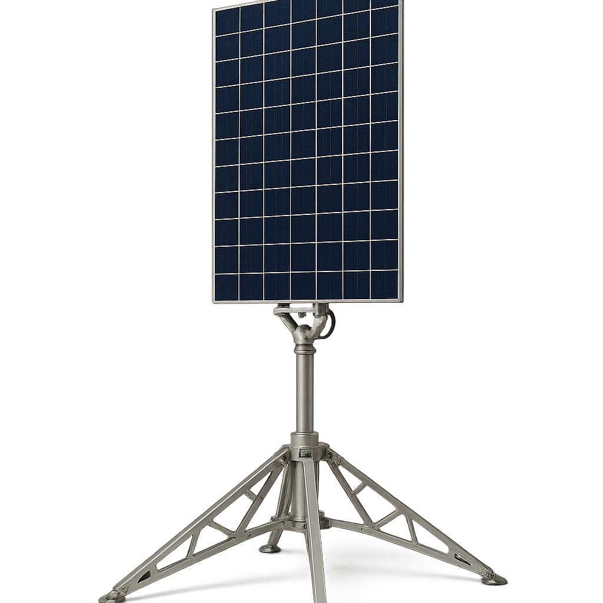
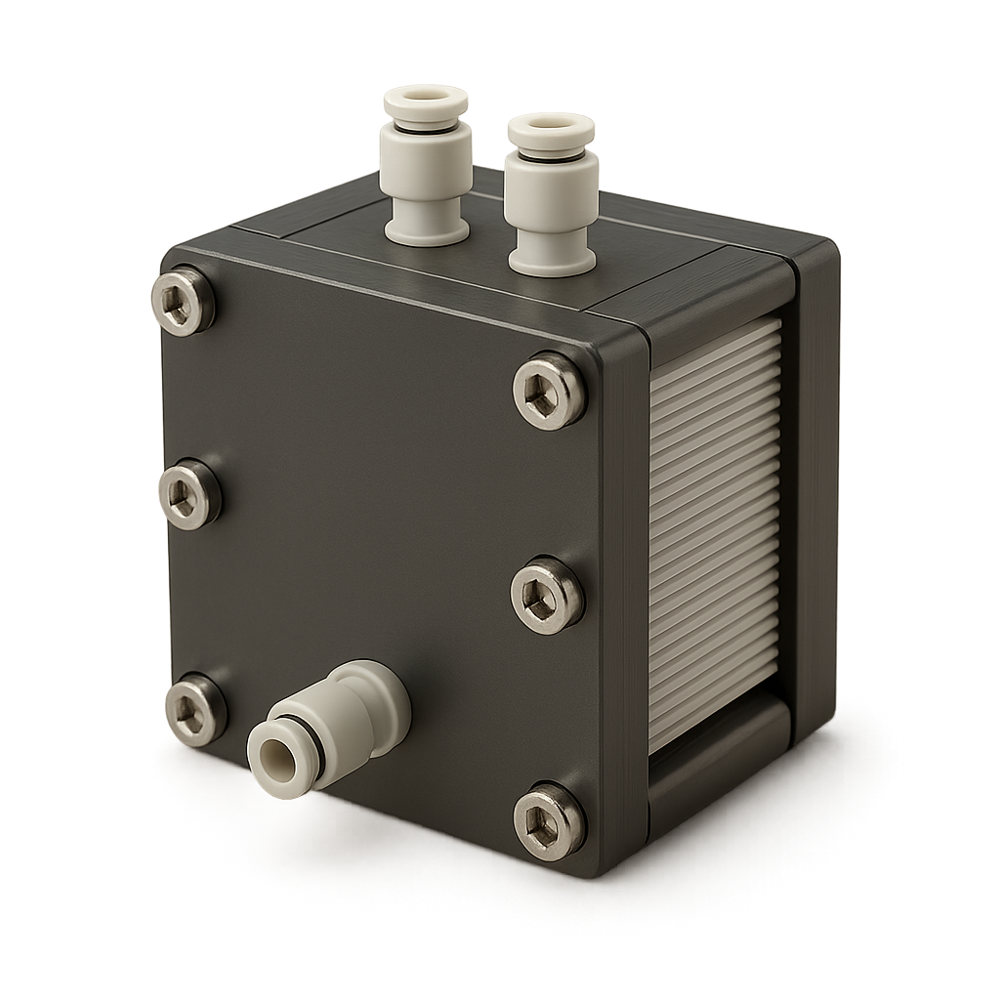
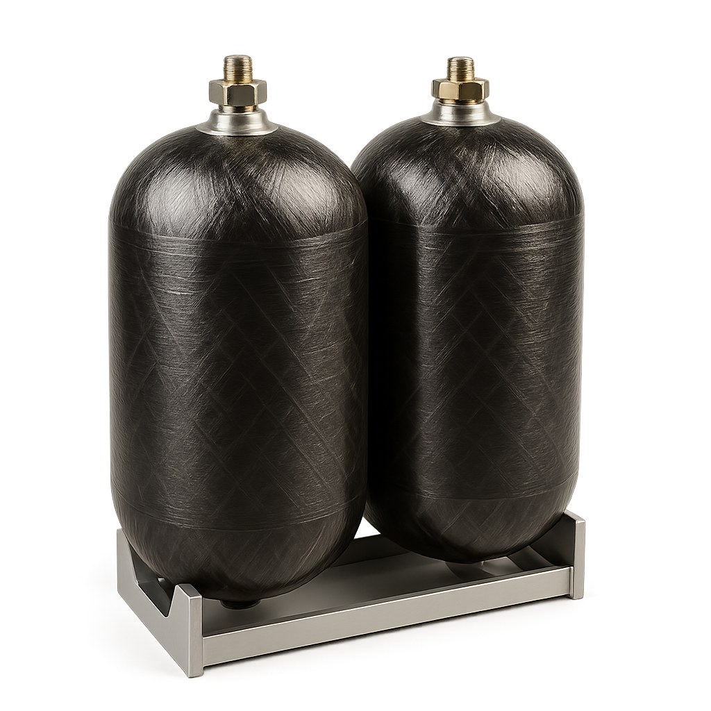
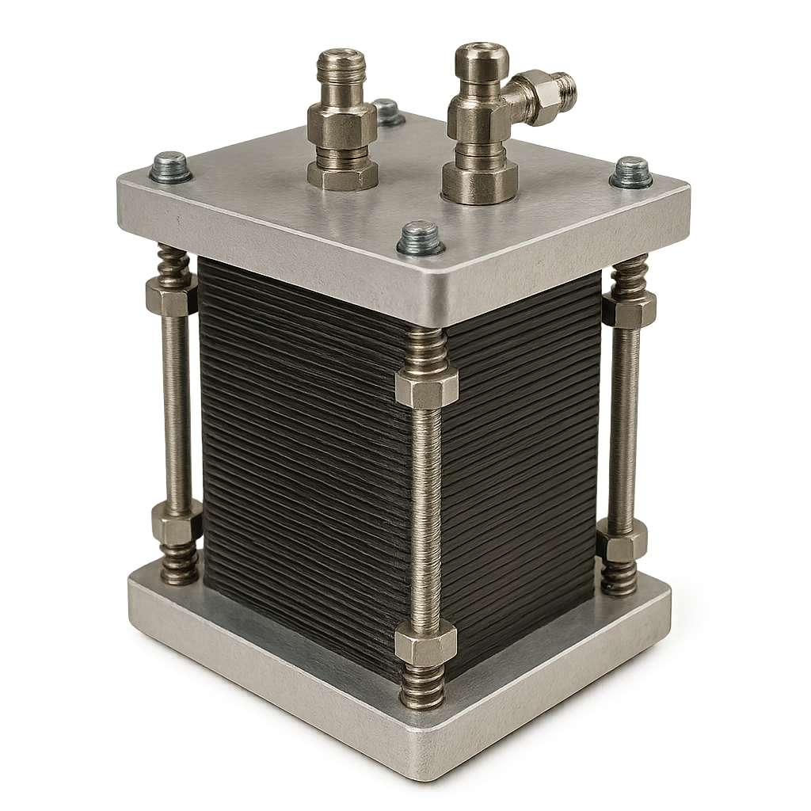
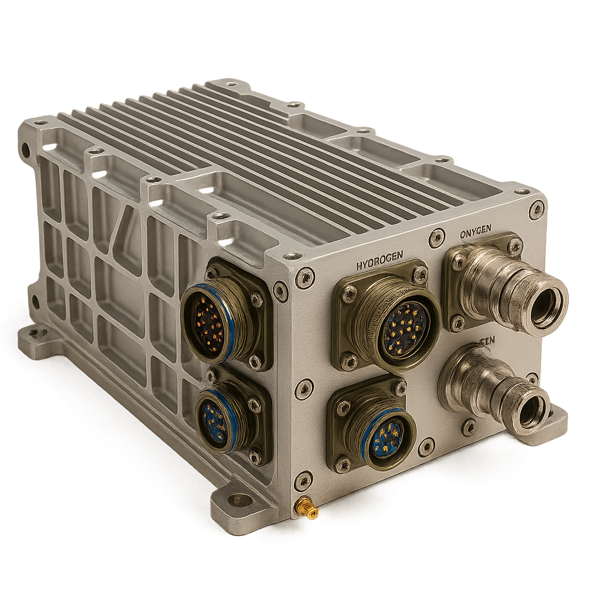

Solar arrays power an electrolyzer to produce and store hydrogen and oxygen during the lunar day. The stored fuel provides continuous power through the 14-day lunar night while enabling refueling for landers, rovers, and other surface systems.
Sun-tracking solar arrays capture lunar sunlight and generate electricity to power surface operations while charging the regenerative energy system.
Excess solar power drives electrolysis, splitting recovered water into hydrogen and oxygen for long-duration energy storage and future refueling.
During the lunar night or periods of peak demand, the fuel cell converts stored hydrogen and oxygen back into electricity, with water recovered and recycled to complete the regenerative cycle.
Our control software continuously rebalances load across generation, storage, and consumption — adapting in seconds as thermal and power conditions shift through the lunar day.
Every deployed unit reports telemetry back to a shared model that plans generation and distribution days in advance, and reroutes around faults autonomously.
The same regenerative cycle, sized up. Units combine into a shared grid without redesigning the underlying system.
Deployed independently or as one coordinated grid.

Capture lunar sunlight and generate electrical power.

Convert excess solar power into hydrogen and oxygen.

Store hydrogen and oxygen for long-duration energy storage and future use.

Convert stored hydrogen and oxygen into continuous electrical power.

Manage power delivery, transient battery buffering, and hydrogen/oxygen transfer for refueling lunar vehicles and surface systems.
Mobile power and life-support gases for surface exploration.
Continuous power, oxygen, and water for crewed modules.
Process power for in-situ resource utilization operations.
Reliable off-grid power for remote instruments and strategic sites.
Unlike battery-only systems that fail through the lunar night, RTGs that can’t scale, or missions that import every consumable, Infinite Exploration’s platform regenerates its own power, gases, and water in place — and shares that capacity across missions.